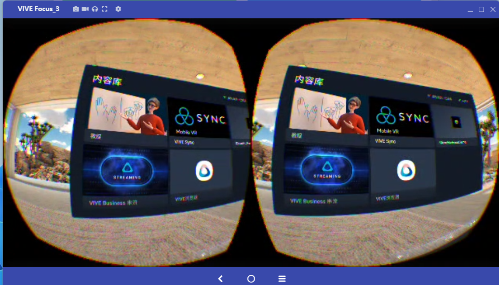
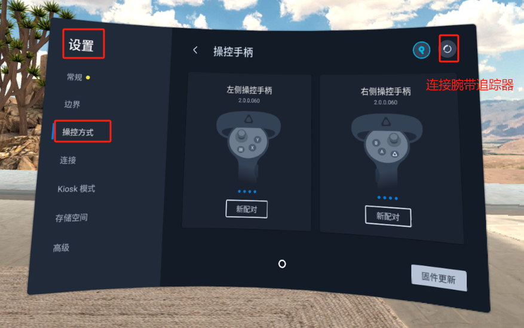
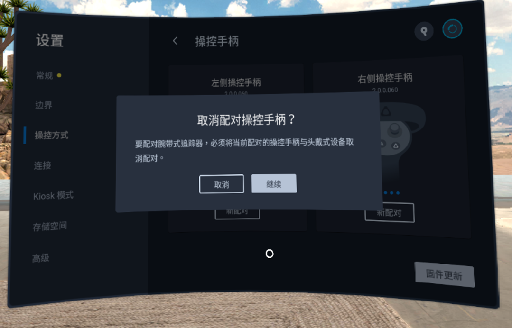
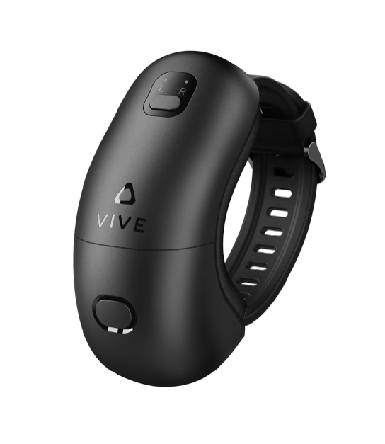
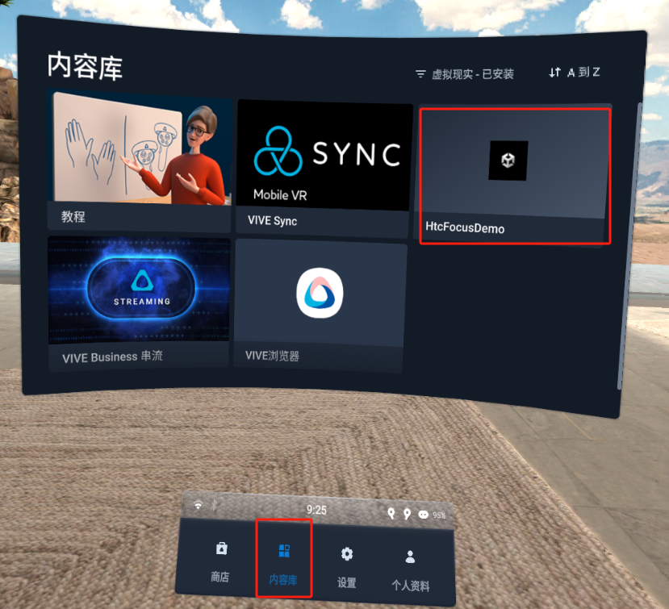

手套+Htc Focus3软件使用文档
-
下载手套软件安装包
文件下载至电脑
请至钉钉文档查看附件《MotionCapture_Glove_Focus_1.1.0.apk》
2.1下载工具Vysor
请至钉钉文档查看附件《Vysor-win-5.0.7.exe》
2.2安装应用
使用软件Vysor可以方便focus和电脑建立连接，在focus中选择文件传输。然后将MotionCapture_Glove_Focus.apk拖入下方画面中，focus中会自动安装apk软件

-
使用手套软件
3.1连接腕带式tracker
使用软件前确认连接了两个腕带追踪器，如果连接了手柄需要先断开手柄的连接
设置>控制方式>选择腕带追踪器，然后根据提示连接



3.2打开软件
在内容库中打开GloveHtcFocusDemo软件。

3.3软件中使用流程
前置条件，pico中插入了手套接收器，并且两只手套设备已开机。
采集数据
先点击采集数据按钮，看得包率是不是0，如果是0检查手套是否已开机。
如果得包率很低，请至pc软件MotionStudio中切换频段。
姿势校准(需要手朝向靶子方向)
没有上述问题后，点击姿势校准按钮，姿势参考下图。

手臂姿势

手部姿势


-
画面串流至PC